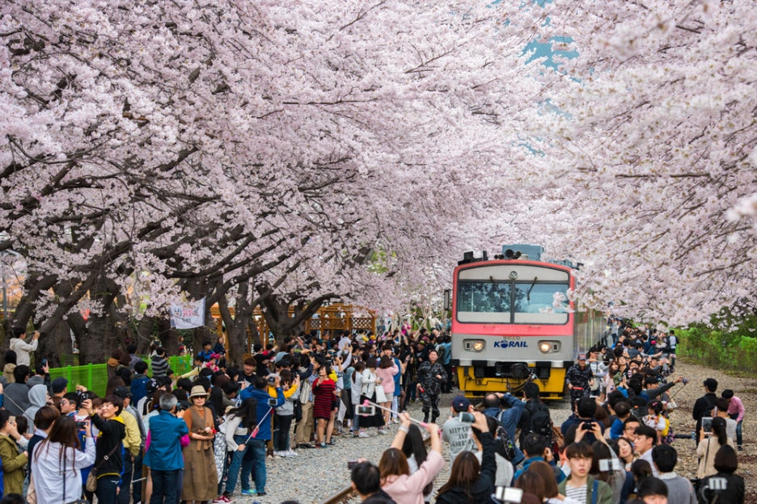

진해
진해는 봄이 되면 진해 전역이 벚꽃으로 가득 차 아름다운 경관을 자랑하며 해군기자와 해군사관 학교가 위치해 있어 해군의 역사와 문화를 함께 느낄 수 있는 도시입니다 바다와 산이 어루어진 자연경관도 뛰어나고 군항제 기간에는 다양한 문화행사와 퍼레이드도 열려 가족 단위 관광객에게 인기가 많습니다.
지역 이미지

진해는 봄이 되면 진해 전역이 벚꽃으로 가득 차 아름다운 경관을 자랑하며 해군기자와 해군사관 학교가 위치해 있어 해군의 역사와 문화를 함께 느낄 수 있는 도시입니다 바다와 산이 어루어진 자연경관도 뛰어나고 군항제 기간에는 다양한 문화행사와 퍼레이드도 열려 가족 단위 관광객에게 인기가 많습니다.
